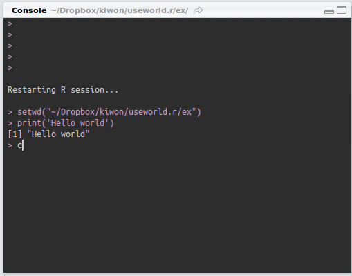

Week.04 : R 프로그래밍 및 개발환경 R Programming and Development Environment
Table of ContentsR 프로그래밍 및 개발환경 R Programming and Development Environment
본인은 프로그래밍을 학습하는 데 있어서 가장 중요한 것은 언어의 학습 자체가 아닌 훌륭한 개발환경을 구축하고 빠르게 레펀런스를 참고하는 것이라 생각한다. 언어의 학습은 그다음이다. 프로그래밍 언어의 학습은 시험공부를 위한 공부와 완전히 다르다. 본인이 생각하는 이상적인 언어 학습은 문법을 이해하고 기억에 남기고 외우는 것이 아니라, 문법을 이해하고 빠르게 참조할 수 있는 나만의 레퍼런스 시스템을 구축한 다음에, 코딩하면서 자주 쓰고 오래 쓰는 것은 기억에 남기는 것이다. 또, 자주 안 쓰는 것은 한번 학습한 다음 이후에 기억하지 못할 것을 예측하고, 전혀 모르는 사람이 보고 이해하고 따라 할 수 있게끔 자신의 방법대로 정리해놓는 방법이 가장 이상적이라고 생각한다. 아주 자주 써도 2~3달 다른 일을 하다 다시 코딩하려고 하면 기억이 나질 않는다. 그래서 전부 정리해 놔야 한다. 이에 있어 이후 강의에 있을 언어 문법 공부를 하기 전에, 앞서 예기한 학습방법을 할 수 있는 개발 환경을 살펴보도록 한다.
R 언어 R Language

R 프로그래밍 언어(줄여서 R)는 통계 계산과 그래픽을 위한 프로그래밍 언어이자 소프트웨어 환경이다. 뉴질랜드 오클랜드 대학의 로스 이하카와 로버트 젠틀맨에 의해 시작되어 현재는 R 코어 팀이 개발하고 있다. R은 GPL 하에 배포되는 S 프로그래밍 언어의 구현으로 GNU S라고도 한다. R은 통계 소프트웨어 개발과 자료 분석에 널리 사용되고 있으며, 패키지 개발이 용이하여 통계학자들 사이에서 통계 소프트웨어 개발에 많이 쓰이고 있다.
R 홈페이지 [Link]
RStudio

R 프로그래밍을 위한 에디터. R 프로그래밍 패키지를 설치했을 때, 기본으로 제공해 주는 에디터 이상으로 개발 환경을 제공한다. 오픈소스이며 웹브라우저 기술로 만들어져 있다.
RStudio 홈페이지 [Link]
개발환경 Development Environment
범용 프로그래밍 언어를 이용하여 개발을 할 때
설치 Install
R
Linux
sudo apt-get install r-base r-base-dev r-recommended
R 리눅스(우분투계열) 다운로드 [Link]
Window
R 윈도우용 다운로드 [Link]
RStudio
Rstudio 설치 [Down]
RStudio 레이아웃 RStudio Layout
Menu bar
File : RStudio 프로그램 및 파일 관리.
Edit : 소스 편집 도구.
Code : 코드 네비게이션 및 실행 관리 도구.
View : 레이아웃 및 소스파일 이동 및 관리.
Plots : 그래프 관리 도구.
Session : 워크스페이스 관리
Build : 소스 빌드 관리, R Project를 통해 활성.
Debug : 디버깅 도구
Tools : 옵션, 버전관리, 데이터 관리.
Help : 도움말
Srouce

소스코드 창을 관리한다.
Console

콘솔창을 관리한다.
Miscellaneous
여러가지 주요 기능들을 두개의 탭에 분배하여 관리한다. Tools > Global Options > Pane Layout 에서 조정할 수 있다
Environment : 변수 정보를 보여주고 데이터를 관리.
Files : 프로젝트 디렉토리 구조 및 파일을 관리.
Help : 도움말 관련
Packages : 패키지 사용
History : 이전에 사용했던 명령어 저장.
Build : 빌드
VCS : Version Control System 버전관리 시스템
Plots : 그래프 출력 관리.
Viewer : 웹 컨텐츠 관리 도구.
RStudio 커스터마이징 RStudio Customizing
RStudio. Customizing RStuddio [Link]
에디터 커스터마이징은 코드 가독성과 개발의 편리 및 개발환경의 제어권을 향상시켜 준다.
소스에디터 설정 : Tool > Global option > Code Editing
소스 및 콘솔 테마 설정 : Tool > Global option > Apearances
에디터 레이아웃 변경 : Tool > Global option > Pane Layout
RStudio 단축키 RStudio Shortcut
단축키를 학습 또한 에디터 커스터마이징과 더불어 코드 작성 및 개발 도구 활용에 도움을 준다. 본인은 에디터를 배울 때 단축키 학습은 필수적이라 생각한다. 단축키를 외우는 것이 아니다. 어떠한 기능을 사용할 때 참조할 수 있는 단축키를 정리해 놓고 그 기능을 사용할 때 계속 단축키를 쓰면 자연스럽게 학습이 된다. 또한, 대부분의 에디터와 개발 도구가 단축키를 직관적으로 만들어 놓았기 때문에 학습에 어려움이 없으며, Vim이나 Emacs와 같은 고전적인 에디터에서 파생된 단축키를 활용하는 경우가 많아서 처음 접근만 노력이 힘들 뿐, 여러 번 반복한다면 문제 될 것이 없다.
모든 단축키를 학습할 필요가 없다. 자주쓰고 중요한 단축키만 선학습을 한 후, 필요한 기능이 있으면 찾아서 학습한 후 사용하면 된다.
본인이 중요하다고 생각하는 단축키는 아래와 같다.
Essential Shortcuts
Source
Go to line [Shift+Alt+g]
Insert code section [Ctrl+Shift+r]
jump to [Shift+Alt+J]
Goto File/Function [Ctrl+.]
Show source code for function at cursor [F2]
Line run [Ctrl+Enter]
Run current document [Ctrl+Alt+r]
Run from document beginning to current line [Ctrl+Alt+b]
Comment/uncomment current line/selection [Ctrl+Shift+c]
Folding
Fold selected [Alt+l]
Unfold selected [Shift+Alt+l]
Fold all [Alt+o]
Unfold all [Shift+Alt+o]
Views
Move focus to Source Editor [Ctrl+1]
Move focus to Console [Ctrl+2]
단축키 참조 Shortcuts Reference
RStudio에서 단축키를 참조하는 방법은 아래와 같이 크게 3가지로 볼 수 있겠다.
Keyboard Shortcut Quick Reference
[Shift+Alt+K] 를 입력하면 Keyboard Shortcut Quick Reference 창이 나타나고 빠르게 참조할 수 있는 단축키 목록이 나타난다.
메뉴바 참조 Menubar
사용할 수 있는 모든 기능이 메뉴바를 통해 접근할 수 있다. [Alt] 키를 누른 상태에서 메뉴바의 단축키가 활성화된다. 이를 통해 기능에 접근하거나 단축키를 참조할 수 있다.
RStudio 웹페지 참조 RStudio webpage
Rstudio shortcut [Link]
RStudio 윂에이지에서 제공해주는 단축키 목록이 있다. 모든 단축키를 확인 할 수 있다.
메뉴얼 및 참고자료 활용 Apply Manuals and References
이 후에 강의에서 R 프로그래밍에 관련하여 기본이 되는 사항은 배우겠지만, 기억이 나질 않거나 필요한 것이 있을 때 그 기능을 찾아 사용할 수 있는 참고자료가 필요하다. 참고자료는 그 기능을 검색 혹은 지표에 따라 직관적으로 찾을 수 있어야 한다.
RStudio 도움말 RStudio Help
기본적인 함수나 기능들을 찾기 위해 RStudio에서 기본으로 제공하는 Help를 활용할 수 있다.
Help 탭에서 다음의 검색 박스에 명령어와 함수를 검색할 수 있다.
또한, Help 탭에서 Home 버튼을 클릭하여 Help Home으로 가면, Reference 섹션에 Packages와 Search Engine & Keywords를 이용할 수 있다.
Packages에서는 기본적으로 제공하는 패키지와 내가 설치한 패키지에 관한 메뉴얼을 볼 수 있으며, Search Engine & Keywords에서는 주제 및 키워드별로 검색을 할 수 있다.
서적 Books
R 관련 서적은 시중과 온라인 상에 굉장히 많다. 너무 많아서 무엇을 봐야할지 모를 정도다. 우선 기본적인 내용은 본 수업의 주교재와 부교재 그리고 서민구의 'R을 이용한 데이터 실무'를 추천한다.
- Norman Matlof(2009). The Art of R Programming. [Down]
- William N(2014). An Introduction to R. [Down] [Link] [Link.kr]
- 서민구(2013). R을 이용한 데이터 실무. [Down]
웹 레퍼런스 Web References
웹에는 R 의 기능을 참조할 수 있는 자료가 너무나 많다. 직접 R 관련 웹 페이지로 들어가서 참조도 할 수 있지만, 단순 구글 검색으로도 대부분 모든 기능을 참조할 수 있다. Stackoverflow를 참조하는 것을 추천한다. 또한 본 수업 Start섹션에 정리되어 있는 기타 참고할 만한 웹페이지는 아래와 같다.
- CSI.Math(2014). Simple R. [Link]
- IcebreakeR(2010). [Down]
- CRAN. R Data Import/Export. [Link]
- Statistics with R. [Link]
- CRAN. R FAQ. [Link]
- Using R for Data Analysis and Graphics Introduction, Code and Commentary [Down]
- R Programming/Settings : wiki books [Link]
- ENDMEMO R Tutorial [Link]
- R Reference Card [Down]
- R by example [Link]
자신만의 레퍼런스 라이브러리 Own Reference Library
위의 내용을 통해 정보를 얻고 끝나는 것이 이니라 추천해 드리는 가장 좋은 방법은 우선 RStudio에서 제공하는 도움말, 서적 그리고 웹 정보를 통해 정보를 얻은 다음, 그것을 자신만의 방법으로 정리하는 것이다. 분류하고 예제를 만들고, 본인이 직관적으로 정리해 놓는 것이 굉장한 도움이 된다. 또한, 정리한 내용에 자신이 참고한 자료들의 링크를 걸어 놓음으로써 정보들을 서로 연결하는 것이다. 실제로 프로그래머 면접을 볼 때 자신만의 라이브러리를 보여주고 설명하는 방법이 사용된다.
프로젝트 관리 Project Managing
프로젝트 생성 및 관리 Create Project and Management
File > New Project 를 통해 새로운 프로젝트를 생성 할 수 있다.
프로젝트를 생성하여 새로운 파일을 만들 때 파일이 기본으로 설정된 working directory에 생성되도록 하고 싶을 때 Tools > Global Options > General 에서 기본 위치를 바꿀 수 있다.
패키지 관리 Package Management
RStudio는 편리한 패키지 관리도구를 제공한다. Packages 탭에가서 원하는 패키치를 검색해서 찾아서 설치할 수 있으며, 패키지 목록에서 사용하고자 하는 패키지에 체크만 하면 사용할 수 있다.
사용가능한 패키지는 CRAN(Comprehensive R Archive Network)에서 확인 할 수 있다.
- Table of available packages, sorted by date of publication [Link]
- Table of available packages, sorted by name [Link]
패키지에 관련하여 이후의 수업에서 더 구체적으로 다루도록 한다.
파일 이름 및 데이터 관리 File Name and Data Management
프로젝트를 관리하는데 있어 프로젝트 구조와 파일이름을 직관적이게 정리하는 것은 중요하다. 몇가지 추천들이는 팁은 아래와 같다.
파일 이름 정하기
파일이름을 정하는 것은 개인의 선택에 해당되지만, 이 바닥(?)에 암묵적인 약속이 있다. CamelCase와 Underscores이다. 변수나 함수, 메소드, 클래스 그리고 파일이름을 정할 때 특수문자나 띄어쓰기를 금하고 있다. 이에 있어 CamelCase와 Underscores를 이용해서 직관적으로 이름을 정할 수 있다.
CamelCase
CamelCase는 난타의 혹처럼 단어가 시작되는 영어 알파벳을 대문자로 쓰는 것이다. glass of water를 GlassOfWater 이렇게 작성하는 것이다. CamelCase도 UpperCamelCase, lowerCamelCase 이 두가지로 나눌 수 있다. UpperCamelCase는 가장 첫번째 단어를 대문자로 쓰는 것이고, lowerCamelCase는 가장 첫번째 단어를 소문자로 작성하는 것이다. 또 CamelCase에서 긴 문장을 변수나 함수로 나타낼 때 줌말을 이용할 수 있다.
Parameter of Darcy Equation : parDarcy Friction factor in Chezy Equation : fricFacChezy
Underscores
Underscroes는 단어와 단어 사이에 under bar "_"를 넣는 것이다. glass of water는 glass_of_water가 된다. 마찬가지로 lower_underscore, UPPER_UNDERSCORE 이 두가지로 사용될 수 있다.
위의 두 가지 경우는 약속에 해당된다. 지키지 않아도 무방하며 자신만의 방법으로 이름을 정하여도 상관은 없다
위치 계층 3단계 이하로 하기 make directory hierarcy level less then level 3
프로젝트를 관리할 때 속성이 비슷하거나 나중에 파일을 빠르게 찾거나 검색하기 위해 위치 계층을 이용한다. 하지만 계층이 너무 길어지면 찾기가 힘들어진다. 계층이 많아지면 많아질 수록 한 눈에 파악하는 것이 힘들어지기 때문이다. 따라서 3단계이하로 하는 것이 좋다. 하지만 3단계 이상의 하위 부류가 생기는 경우가 있다. 이럴땐 폴더명을 이용해서 계층을 할당한다. 예를 들어 prj > sub > img 라는 위치에 하위 부류로 또 폴더를 나누고 싶을때 img 하위에 폴더를 만드는 것이 아니라, img와 동일 한 위치에 img.temp라는 폴더를 만드는 방법으로 계층을 분할 하는 것이다.
또한 마찬가지로 위치명을 정할 때, CamelCase나 Underscores, dot(".")을 이용하는 것이 좋다.
README 파일 만들기
프로젝트를 관리할 때, 프로젝트 파일 안에 README파일을 만드는 것을 추천한다. README파일을 적는 절대적인 규칙은 존재 하지 않는다. 누군가 읽어서 프로젝트를 이해할 수 있게 정리를 한다던가, 자신이 오랜 시간 뒤에 README파 일을 읽었을 때, 그 프로젝트를 빠르게 다시 시작할 수 있으면 그만이다. Github를 비롯한 여러 오픈소스 프로젝트 지원 저장소는 Markdown이라는 Markup 언어를 통해 README 파일을 작성하도록 하고 있다. RStudio 또한 Markdown을 기본 Markup 언어 서식으로 정하고 있다.
추천 Markdown Editor : 하루패드 [Link]
Reference
- 위키백과-R. http://ko.wikipedia.org/wiki/R_%28프로그래밍_언어%29
- RStudio. http://www.rstudio.com/products/rstudio/
- RStudio - Customizing RStuddio. https://support.rstudio.com/hc/en-us/articles/200549016-Customizing-RStudio
- Wikipedia-Naming Convention. http://en.wikipedia.org/wiki/Naming_convention_%28programming%29